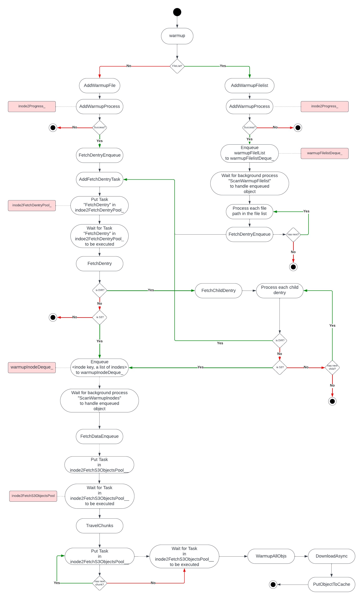
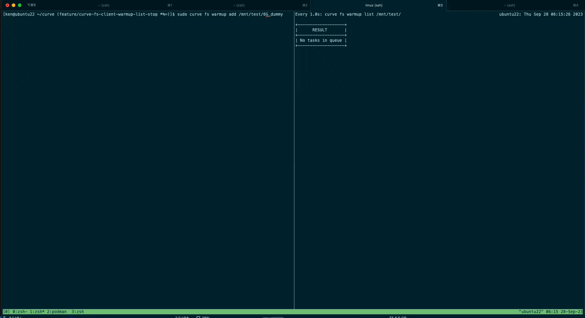
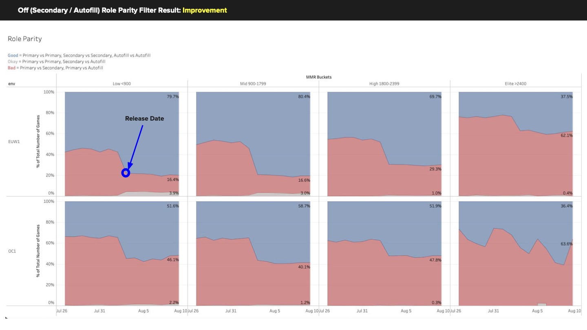
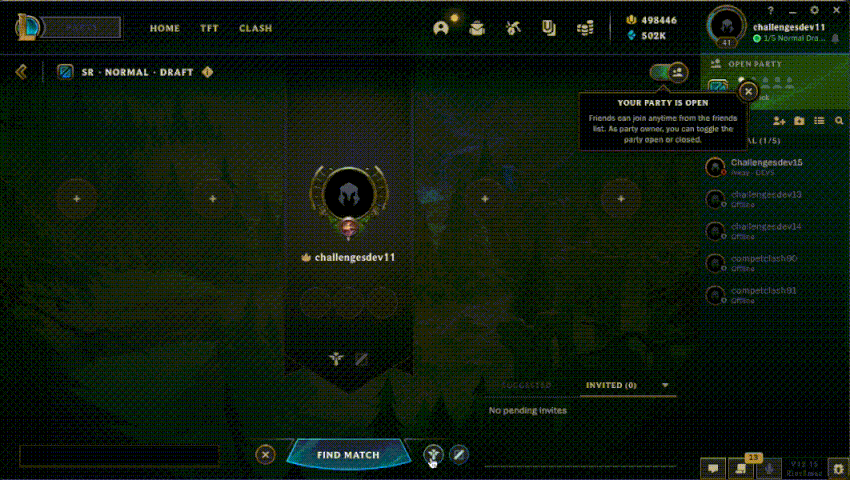
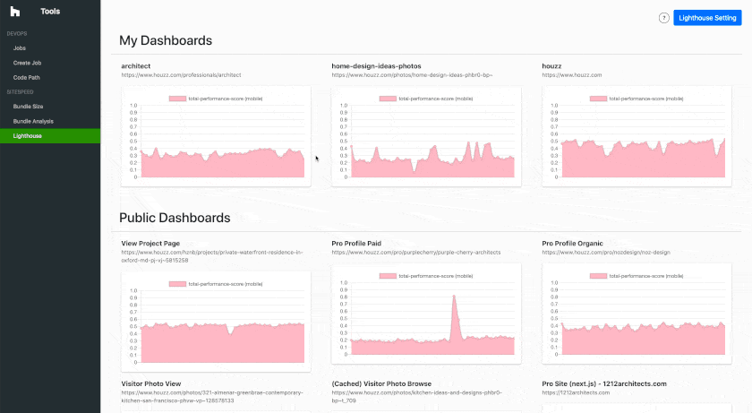
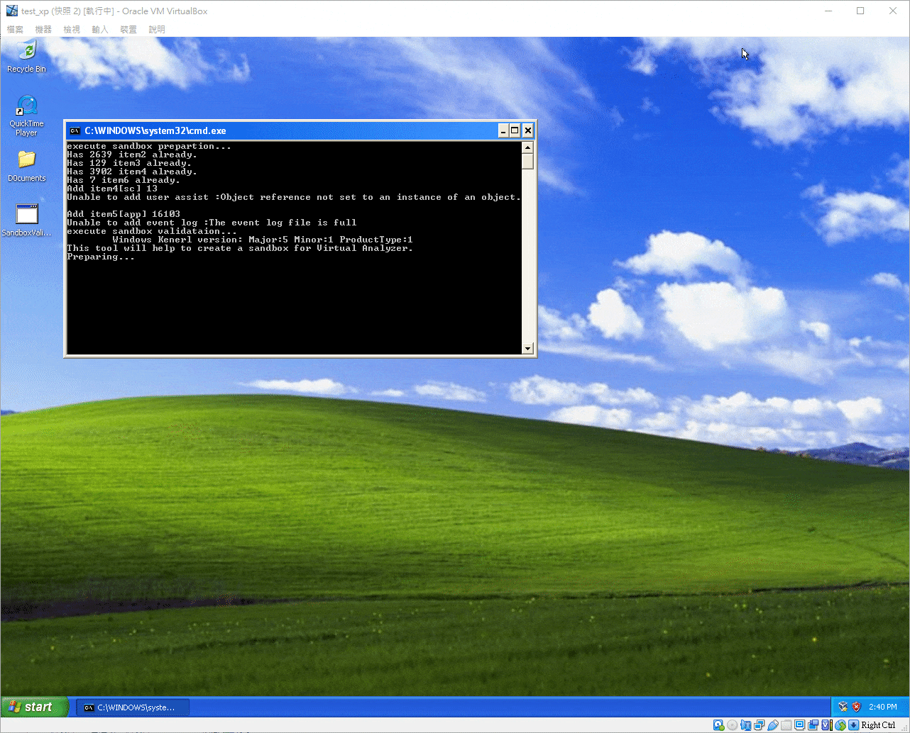

Papers
-
A Deep Learning Model for Extracting Live Streaming Video Highlights using Audience Messages.
[pdf]
Hung-Kuang Han, Yu-Chen Huang, and Chien Chin Chen.
in Artificial Intelligence and Cloud Computing Conference (AICCC), 2019
Technical Deep Dives
Industry Experience
-
Curve (CNCF Open Source): Warmup List and Stop Interfaces.
[pull request]
[
C++|Go]

CurveFS lazily fetches remote files on first access, introducing latency from network I/O and local writes. I extended the warmup subsystem with three new interfaces: preserving existing job file lists on subsequent adds, canceling in-flight jobs and their downstream tasks, and listing all active warmup jobs per filesystem. These additions give operators direct observability and control over the pre-fetch lifecycle.
-
Riot Games: Team Matchmaking System.
[
Java|Python]Released on production: Riot News - MATCHMAKING AND CHAMPION SELECT
The chart above shows off-role parity rising sharply in the targeted region immediately after rollout. The core problem was that the existing algorithm permitted asymmetric role confidence between opponents, pairing one player's off-role against another's main position and creating a perceivable disadvantage.
I redesigned the matching logic to enforce parity by grouping players into role-confidence tiers before pairing them. To manage the queue-time tradeoff, I ran offline simulations against 2M+ historical matches using Python and Databricks, iterating until the parity gain justified the latency cost. The service ran on Java and Spring.
-
Riot Games: League of Legends Client Application.
[
C++|Java|JavaScript]
The feature surfaces position scarcity to players during champion select. What appeared to be a straightforward UI change required careful distributed systems work: the scarcity signal is derived from state spread across parties, lobbies, and matchmaking services on separate servers, so inconsistent views between lobby members would undermine the feature's usefulness.
I stored the shared state in a Redis-backed cache with periodic source refresh, ensuring all clients in a lobby see a consistent snapshot. The client layer used Ember.js and C++; the backend used Java and Spring.
-
Houzz: Website Performance Monitoring Service.
[
ReactJS|JavaScript|k8s|Docker]
The platform has two components: a React + Node.js dashboard for visualizing historical metrics and configuring targets, and a monitoring daemon containerized with Docker and orchestrated as a k8s Job. The daemon runs continuously, collecting Lighthouse scores and Web Vitals across hundreds of Houzz pages and persisting results to MongoDB for trend analysis.
-
Trend Micro: Virtual Machine Configuration Tool.
[
C++|C#|Shell script]
I extended the existing C++ and C# wizard to support Linux sandbox creation alongside the existing Windows flow. The feature automates VM import, package installation, and environment hardening via Shell Script, replacing what had been a manual process. Adding Linux coverage meaningfully expanded the malware detection surface; Linux VMs now account for over 34% of active sandboxes.
-
Trend Micro: Virus Analyze Integration Core Module.
[
Python|C++|Shell Script]I owned the preprocessing stage of the malware analysis pipeline, where incoming file samples are triaged before scanning. One key addition was EGG-format decompression support, a Korean archive format that the system had not previously handled. I refactored an open-source C++ EGG library and integrated it into the existing pipeline without disrupting the surrounding flow.